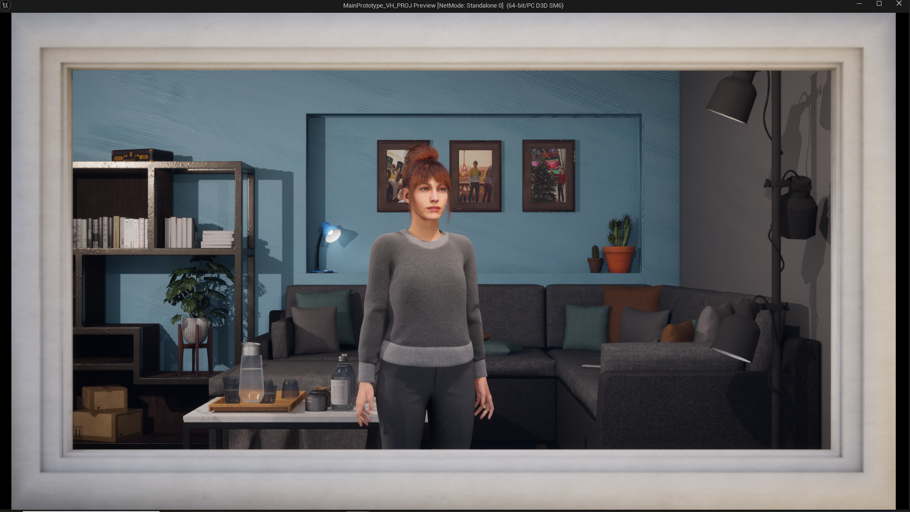

Projecten
Van UX-onderzoek tot complete redesigns — een selectie van mijn werk.

Virtual humans tegen eenzaamheid
Een empathische Virtual Human voor eenzame ouderen, met focus op natuurlijke interactie en laagdrempelige bediening.
Bekijk project
Waterbesparen voor de toekomst
Een speelse campagne voor waterbesparing, met focus op lokale trots en gemeenschapsgevoel.
Bekijk project
Fijner winkelen bij Jumbo
Een herontwerp van het zelfscanproces bij Jumbo, met focus op klantvertrouwen en positieve gedragssturing.
Bekijk project